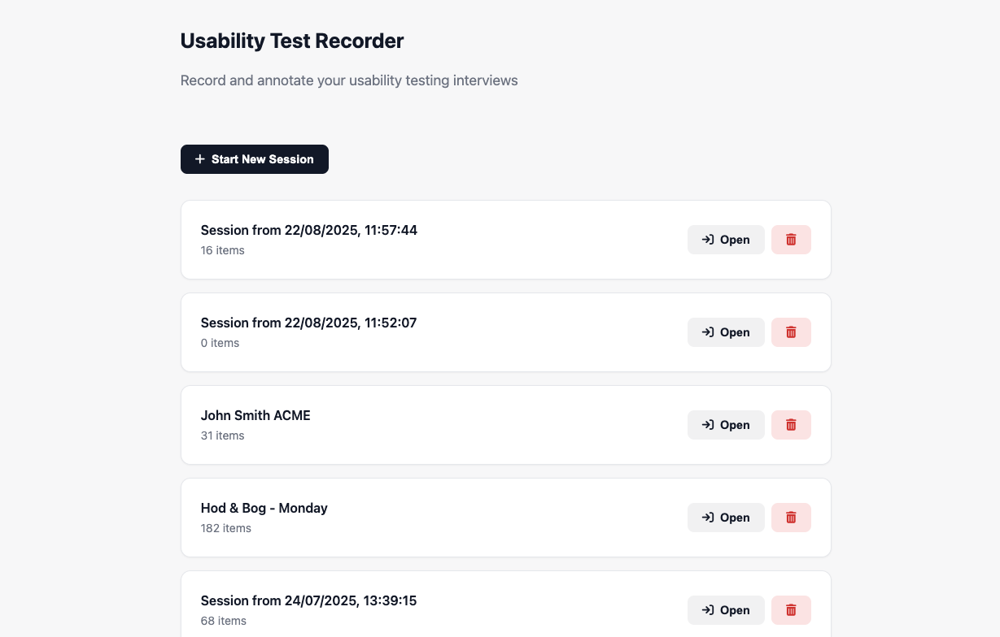
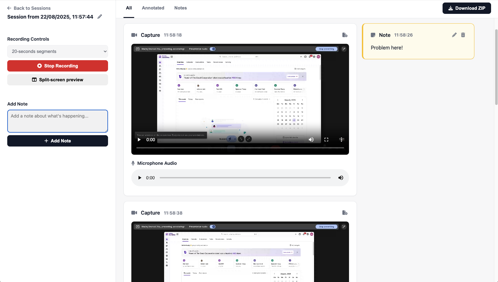

Never lose insights
Drop notes as the session runs—every note is timestamped.
A privacy-first web recorder for interviews and usability tests. Live notes, split-screen and AI‑ready exports.
Benefit‑driven features with proof.
Drop notes as the session runs—every note is timestamped.
Get 30–120s segments auto‑saved and aligned to notes.
Filter to “Annotated” to review only flagged moments.
Split‑screen preview keeps video and notes together.
Media + .TXT notes bundled and AI‑friendly.
Record and annotate locally; export only when you choose.
Start recording the interview tab with audio.
Type notes or mark interesting moments.
Filter by “Annotated” to skim video fast.
Download a ZIP for sharing or AI summary.


You want to make draft notes during the interview but later on want to remind yourself what this note was about.
Just add notes during the recording. All notes are attached to video segments of the interview at their respective time. You can just watch the segments that are near the note to refresh your memory.
You don’t want to be distracted by making notes during the interview, but you want to mark interesting moments to revisit later.
Just add empty notes during the interview. Later on you can edit the notes.
You want to only summarise insights that you noticed, without AI hallucinations.
You can first filter notes by “Annotated” and then export a ZIP. This will only export relevant video clips. and their .TXT notes. You can upload it to Gemini so that AI focuses on what is truly important.
You want to show an interesting part of usability test to a product manager, but you know they won’t watch the whole recording.
You can export the video clips and then only share one specific 20 seconds clip with them on Slack, without messing around with video editing tools.
You want to annotate the interview in real time and see what the candidate is doing.
Our tool offers “split screen live view” which allows you to quickly see the notes input and the interview tab side by side. No messing with windows.
You want to just glance through your notes after the interview.
You can filter the timeline view by clicking “Annotated” and then you can only see video chunks that you annotated. Or click “Notes” to just view the notes.
You don’t want to upload confidential data to third-party tools.
Our recording tool works completely offline. All data is stored on your computer only.
You don’t take any notes during the interview and just want an automated summary based on the video
Export all video segments as ZIP and upload to Gemini Pro via Google AI Studio
Drop quick notes during interviews; review nearby clips to recall context.
Tap empty notes to flag highlights and annotate after the call.
Export only annotated clips + TXT notes; feed Gemini focused signals.
Export segments and share the exact moment — no editing tools.
Use split view to see notes and video together while skimming.
Everything is local unless you export — perfect for sensitive studies.
Export notes + clips as a ZIP; paste them into your AI tool (e.g., Gemini) for fast summaries.
All recordings and notes are stored locally on your computer (IndexedDB).
Yes. Recording and notes happen locally. Export is manual and optional.
Free to use. Practical limits depend on your browser storage and device performance.
Static HTML on GitHub Pages.
They’re optimized for AI models. Play them in Chrome; legacy players may not work.
Spotted an issue? Ping saw.maciej@gmail.com.